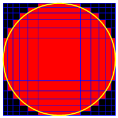

This website is a semi-functional mirror of the original Project Euler. More information is available on GitHub.

Enmeshed unit circle
Problem 392
Published on 01 September 2012 at 02:00 pm [Server Time]
A rectilinear grid is an orthogonal grid where the spacing between the gridlines does not have to be equidistant.
An example of such grid is logarithmic graph paper.
Consider rectilinear grids in the Cartesian coordinate system with the following properties:
- The gridlines are parallel to the axes of the Cartesian coordinate system.
- There are N+2 vertical and N+2 horizontal gridlines. Hence there are (N+1) x (N+1) rectangular cells.
- The equations of the two outer vertical gridlines are x = -1 and x = 1.
- The equations of the two outer horizontal gridlines are y = -1 and y = 1.
- The grid cells are colored red if they overlap with the unit circle, black otherwise.
E.g. here is a picture of the solution for N = 10:

The area occupied by the red cells for N = 10 rounded to 10 digits behind the decimal point is 3.3469640797.
Find the positions for N = 400.
Give as your answer the area occupied by the red cells rounded to 10 digits behind the decimal point.
Go to back to Problems